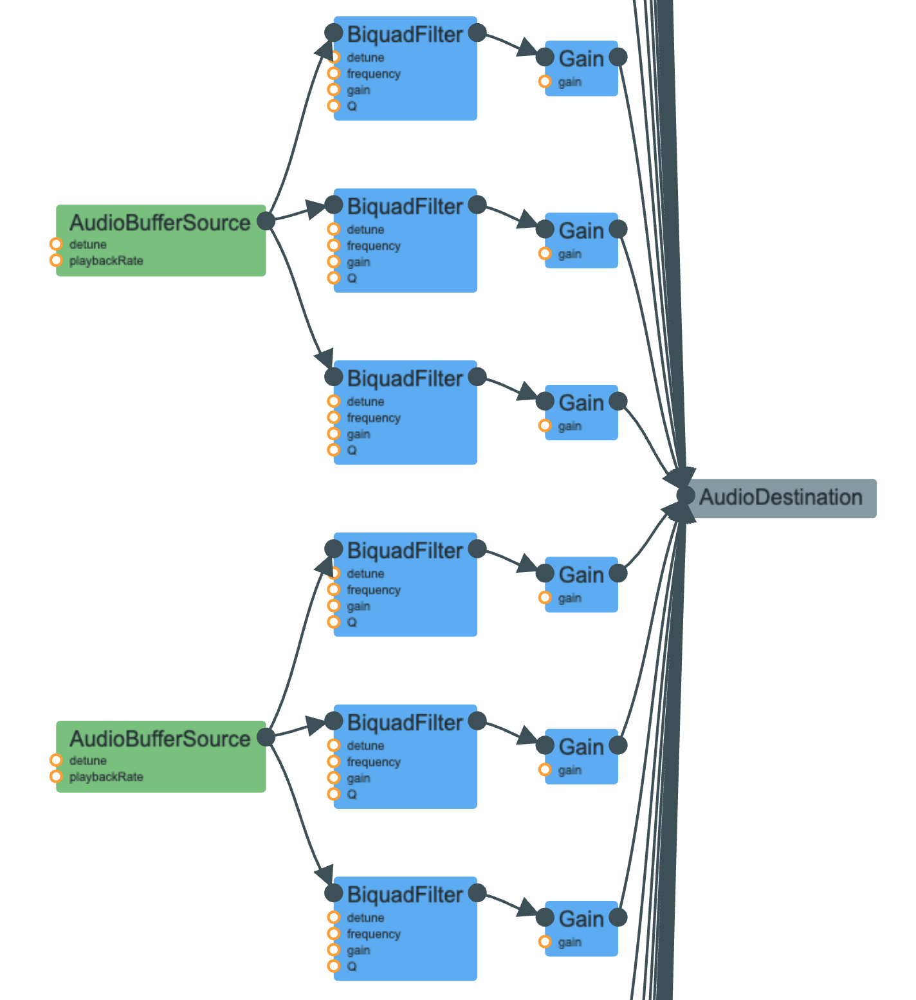

Click to go to babbling brook page!
I originally sought to recreate the clock sound described in the Farnell book, but ended up transitioning it to sound like a stopwatch, with 4 ticks per second and higher pitched ticks. I started by following the clock description given by Farnell, which recommended making 3 parallel bandpass filters connected to white noise. I made a triggerTick( ) function, and in it called my white noise generator function, and connected the generated white noise source to 3 bandpass filters. I also made an ASDR envelope for each “filtered” white noise part, with variable decay times that were generated randomly. I also randomly generated the frequencies for the bandpass filters. You can see in my WebAudio picture how there is a AudioBufferSource (the generated white noise), connected to 3 parallel biquad filters, which I typed to bandpass, each connected to its own gain to control the envelope, then connected to AudioDestination.I also made sure to call stop on the whiteNoise after 0.04 seconds, just to stop the tick. I then called setInterval with the triggerTick function as the recurring function, so that ticks would continue to be generated. In my WebAudio picture, you can see multiple AudioBufferSources et al being generated. After deciding to transition it to a stopwatch, I made the setInterval time 250 ms so that there would be 4 ticks per second and raised the min, max boundaries that I placed on random frequencies to make the ticks higher pitched.
